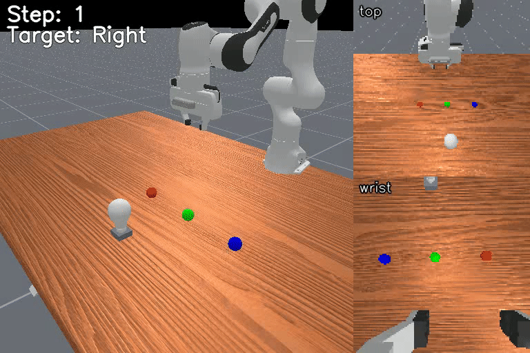

Shell Game Shuffle Color Lamp Touch#
Language Instruction
Observe which color is under each cup, track the cups as they shuffle, then touch the cup matching the lamp color.
Task Description
Hidden color-location tracking: track cup-color associations through shuffling and touch the lamp-matching cup.
{kind=link}

Source#
Module:
mikasa_robo_suite.vla.memory_envs.shell_game_shuffle_color_lamp_touch_vlaSource file:
mikasa_robo_suite/vla/memory_envs/shell_game_shuffle_color_lamp_touch_vla.py
Difficulty and Parameters#
Long variants increase shuffle and memory horizon.
Variants#
Env ID |
Horizon |
Data Source |
|---|---|---|
|
600 |
MP |
|
60 |
PPO |
Run Example#
import gymnasium as gym
import torch
import mikasa_robo_suite.vla.memory_envs # registers VLA env IDs
from mikasa_robo_suite.vla.utils.apply_wrappers import apply_mikasa_vla_wrappers
env = gym.make(
"ShellGameShuffleColorLampTouch-VLA-v0",
num_envs=1,
obs_mode="rgb",
control_mode="pd_ee_delta_pose",
render_mode="all",
)
env = apply_mikasa_vla_wrappers(env)
obs, info = env.reset(seed=42)
for _ in range(env.max_episode_steps):
action = env.action_space.sample()
if not torch.is_tensor(action):
action = torch.as_tensor(action, device=env.unwrapped.device)
obs, reward, terminated, truncated, info = env.step(action)
env.close()
Dataset Collection#
PPO-sourced MIKASA-Robo-90 variants use oracle checkpoints:
uv run python mikasa_robo_suite/vla/dataset_collectors/get_mikasa_robo_datasets.py \
--env-id ShellGameShuffleColorLampTouch-VLA-v0 \
--path-to-save-data data_mikasa_robo \
--ckpt-dir . \
--num-train-data 250
Motion-planning MIKASA-Robo-90 variants use planner plus replay collection:
uv run python mikasa_robo_suite/vla/dataset_collectors/get_mikasa_robo_datasets_motion_planning.py \
--env-id ShellGameShuffleColorLampTouch-Long-VLA-v0 \
--path-to-save-data data_mikasa_robo \
--num-train-data 250 \
--max-attempts 5000 \
--seed 0
Render Videos#
Generate a fresh MP4/GIF render with:
uv run python utils/prepare_benchmark_demo_videos.py \
--tasks ShellGameShuffleColorLampTouch-VLA-v0 \
--output-dir videos/benchmark_demos \
--max-attempts-per-task 8 \
--overwrite
Generated media stays under videos/ and should be published deliberately rather than committed by default.